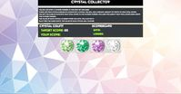
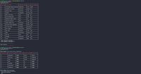

About Me

I am a Full Stack Web Developer with a preference for back end development. But I wasn’t always! So how did I get here?
As a disoriented yet ambitious college freshman, I decided on Mathematics as my major. I always loved how math is entirely objective yet still allows for creative license. There may only be one solution to a given problem yet there might be many creative ways to arrive at the solution. While my ambition was clear, sadly my direction was not! The arrow of time crept nearer to graduation, but I wasn’t any closer to deciding on what career path to take. Being unsure on a career and somewhat apprehensive, I did the one thing that allowed me to put off choosing and to bide some time – I went back to school.
My undergraduate program was focused on pure Mathematics so this time I thought it prudent to study a subject that is more applied. Applied Statistics seemed to be a good fit (“applied” is right there in the name!). Despite studying math, I actually did not have much exposure to statistics up to this point. It was not a required course in my undergraduate program and much of my prior knowledge came only from a half-year course I had taken in high school. To my dismay, as I progressed through the program and as another graduation neared, I came to the realization that Statistics simply wasn’t for me. I again graduated without any idea of what career to choose. At the time I didn’t understand why my passion for math fell short on Statistics. I was lost.
Still without direction but now unwilling to return to school and rack up more student loan debt, I felt my only choice was to enter the work force and give it a shot; give anything a shot. I took a position as an Associate on the Family Tree Service team at KPMG. The role involved reviewing the corporate tree hierarchies for the firm’s clients to ensure the quality of the data in the firm’s main risk application. This process involves translating the corporate structure onto an Excel template, then importing the template into an Access tool, which would run a comparison algorithm to compare the template with the current state of the tree structure.
This service was new to the firm and as such business was slow in the beginning. My manager encouraged me to train on something that interested me when no work was pending. Because the role involved working mostly with Excel, I decided to learn VBA. I had taken a couple courses in Java throughout college, so programming logic was not new to me but I had never applied this knowledge in the real world. Once I had a working knowledge, I became obsessed with finding any repeatable process I could automate. I would often find myself working after hours on scripts simply because I enjoyed the challenge.
It was at this time I came to realize why I am uninterested in Statistics. The courses in my undergraduate program focused more on the logical flow of math whereas Statistics is mostly number crunching. Programming is entirely focused on logical flows. I finally discovered how to turn my passion into a career.
Eventually I decided to return to school one last time but this time with direction. Currently I am a student of the Rutgers University Coding Bootcamp, which has provided me with exposure to a variety of both front and back end technologies and I am eager to learn more. Now I am seeking an opportunity with a company that will help me grow as a developer.
Portfolio
Browser Applications
Deuce Dash
Need to go? Find a public restroom in NYC!
find it in a GIF-y
Looking for a GIF and want to save your favorites? Check out find it in a GIF-y!
Bob's Burgers Trivia
Think you know Bob? Test your knowledge!
Crystal Collector Game
Collect crystals until you reach the target score but be sure not to collect too many!
Spongebob Character Guess Game
Think you know Spongbob's friends? See if you can guess the character!
CLI Application Demos
Bamazon
Command line online store. Run as a customer to buy items, as a manager to view and update inventory, or as a supervisor to add departments or run sales report. Source Code